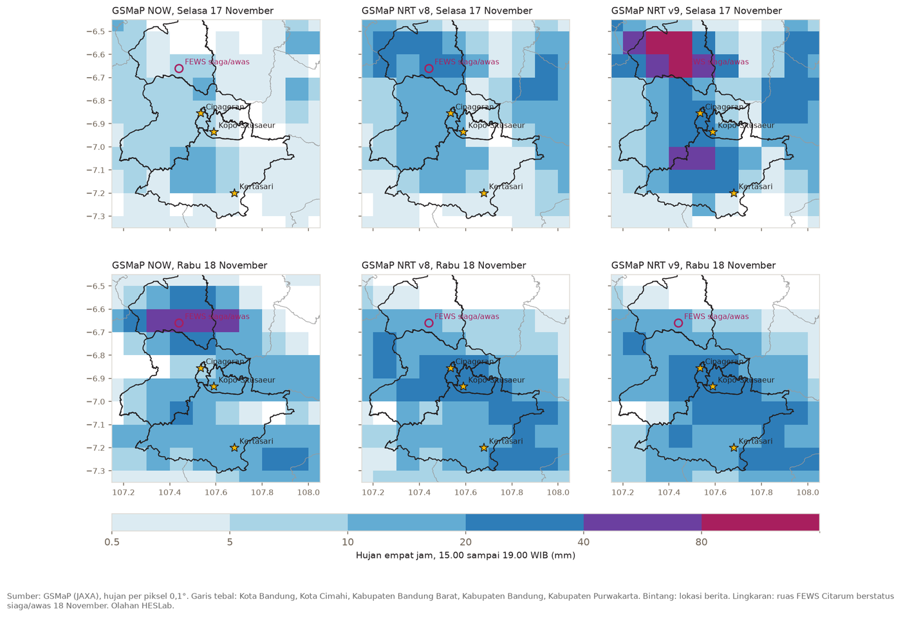

Dua sore berturut-turut, Selasa 17 dan Rabu 18 November 2026, hujan deras mengguyur Bandung Raya. Sebuah rumah di Cipageran, Cimahi Utara, kebanjiran dua hari berturut-turut, Kota Bandung mencatat pohon tumbang dan tanggul jebol di Kopo, dan Rabu sore banjir lumpur menutup jalan di Kertasari, Kabupaten Bandung. Tulisan ini membaca hujan kedua sore itu dengan tiga produk satelit GSMaP yang terbit cepat (NOW, NRT v8, dan NRT v9). Di lokasi-lokasi kejadian, hujannya tergolong sedang. Hujan terlebat tercatat di Kabupaten Purwakarta, tetapi tiap sore hanya oleh satu produk, dan peringatan FEWS Citarum HESLab di sana pada Rabu petang tidak didukung oleh NRT yang masuk beberapa jam kemudian.

Apa yang tercatat di lapangan
Selasa 17 November. Hujan deras disertai angin kencang menumbangkan delapan pohon di Kota Bandung menurut data Damkarmatan sampai pukul 17.50 WIB. Salah satunya tumbang sekitar pukul 16.30 di Jalan Prabu Dimuntur. Tanggul di Jalan Madesa, Kelurahan Kopo, jebol dan air masuk ke rumah warga, dan genangan dilaporkan di Situsaeur (Media Indonesia). Wali Kota Bandung menyebut hujan hari itu hanya sekitar satu jam tetapi sangat deras, dengan genangan terutama di Bandung Selatan (FokusJabar).
Sekitar pukul 16.45 WIB hari yang sama, tembok dapur sebuah rumah di Komplek Bukit Cipageran Indah, Kelurahan Cipageran, Cimahi Utara, jebol saat hujan deras dan air menyapu perabotan. Rabu sore rumah itu kebanjiran lagi. Camat Cimahi Utara menduga ada kegagalan konstruksi galian tembok penahan tanah di belakang rumah dan gorong-gorong yang jebol (Media Kompeten).
Rabu 18 November. Sekitar pukul 16.30 WIB banjir lumpur setebal 20 sampai 40 cm menutup Jalan Raya Cibeureum di depan Polsek Kertasari, Kabupaten Bandung. Hujan deras turun sejak sekitar pukul 15.30, dan potongan kayu yang tersangkut di bawah jembatan menghambat aliran. Tidak ada korban jiwa (Koran Gala).
Untuk Kabupaten Purwakarta tidak ditemukan berita banjir pada kedua sore itu.
Apa kata satelit
Satu piksel GSMaP berukuran 0,1 derajat, sekitar 11 × 11 km. Cipageran berada di piksel yang berpusat di 6,85° LS dan 107,55° BT, yang mencakup sebagian besar Kota Cimahi. Kopo dan Situsaeur berada di piksel 6,95° LS 107,55° BT. Kertasari berada tepat di batas dua piksel, sehingga dipakai rata-rata 3 × 3 piksel di sekitarnya.
| Hujan empat jam, 15.00–19.00 WIB (mm) | NOW | NRT v8 | NRT v9 |
|---|---|---|---|
| Cipageran, Selasa 17 | 6,5 | 11,2 | 20,8 |
| Kopo–Situsaeur, Selasa 17 | 6,2 | 13,7 | 39,2 |
| Kertasari, Selasa 17 | 5,2 | 6,9 | 21,7 |
| Cipageran, Rabu 18 | 8,7 | 23,1 | 21,5 |
| Kopo–Situsaeur, Rabu 18 | 16,0 | 23,9 | 26,2 |
| Kertasari, Rabu 18 | 10,5 | 18,0 | 19,3 |
Selasa sore hujan mulai pada jam yang berakhir pukul 17.00 WIB menurut NRT v8 dan v9, dan reda setelah pukul 20.00. Di piksel Kopo–Situsaeur, NRT v9 mencatat 20 mm dan 17 mm pada dua jam berturut-turut, sejalan dengan keterangan wali kota tentang hujan singkat yang sangat deras dan dengan pohon tumbang sekitar pukul 16.30. NRT v8 mencatat paling tinggi 7 mm per jam, dan NOW paling tinggi 5 mm per jam. Di Cipageran hujan Selasa paling tinggi 10 mm per jam menurut NRT v9.
Rabu sore NRT v8 dan v9 mencatat hujan mulai pada jam yang berakhir pukul 16.00 WIB, 3 sampai 5 mm di Cipageran, Kopo–Situsaeur, dan Kertasari, cocok dengan hujan yang mulai sekitar pukul 15.30 di Kertasari. Puncaknya 8 sampai 11 mm per jam pada jam yang berakhir pukul 17.00 dan 18.00, lalu hujan reda setelah pukul 19.00. Menurut NRT v8, hujan Rabu di ketiga lokasi sekitar dua kali hujan Selasa. Menurut NRT v9, hujan Rabu setara dengan Selasa di Cipageran dan Kertasari, dan lebih kecil di Kopo–Situsaeur. NOW mencatat 40 sampai 65 persen dari jumlah NRT, dan di Cipageran baru mulai mencatat hujan pada jam yang berakhir pukul 17.00. Selasa di ketiga lokasi, dan Rabu di Cipageran, NOW mulai mencatat hujan sekitar satu jam lebih lambat daripada NRT.

Di Kabupaten Purwakarta ketiga produk tidak sepakat. Selasa sore NRT v9 mencatat 94 mm dalam empat jam di piksel 6,65° LS 107,45° BT dan rata-rata Purwakarta 59 mm, NRT v8 rata-rata 18 mm, sedangkan NOW hanya 4 mm. Rabu sore sebaliknya: NOW mencatat 65 mm di piksel yang sama, 51 mm di antaranya dalam satu jam yang berakhir pukul 17.00 WIB, sedangkan NRT v8 dan v9 mencatat sekitar 13 mm di piksel itu, paling tinggi 7 mm per jam, dan 6 mm rata-rata kabupaten. Menurut NRT, hujan Rabu sore lebih lebat di Bandung Raya (rata-rata Kabupaten Bandung 18 sampai 20 mm) daripada di Purwakarta.
FEWS Citarum
FEWS Citarum HESLab menghitung debit tiap jam untuk 3.372 ruas sungai di WS Citarum dari hujan GSMaP. Run pukul 19.00 WIB Rabu menandai 2 ruas awas, 33 ruas siaga, dan 34 ruas waspada, dengan puncak debit sekitar pukul 18.15 WIB. Kedua ruas awas dan ke-33 ruas siaga berada di Kabupaten Purwakarta, di bawah inti hujan NOW tadi. Ruas-ruas di Cimahi, termasuk yang mengalir dari Cipageran, tetap normal dengan debit 1 sampai 4 m³/s, jauh di bawah batas waspadanya.
Status Rabu petang itu bertumpu pada NOW, yang dipakai FEWS untuk empat jam terakhir tiap run. Run pukul 20.00 WIB tinggal menandai 19 ruas waspada, dan sejak run pukul 21.00 semua ruas kembali normal. Run pukul 23.00 WIB, yang sudah memakai NRT untuk jam-jam sore itu, mencatat hujan paling tinggi 8 mm per jam di ruas-ruas Purwakarta tadi, jauh di bawah 51 mm per jam menurut NOW. Status terkini dapat dilihat di halaman FEWS Citarum.
Selasa sore, FEWS tidak menandai ruas mana pun sampai run pukul 20.00 WIB. Run sampai jam itu memakai NOW untuk empat jam terakhirnya, dan NOW mencatat hujan Selasa di Purwakarta jauh lebih kecil daripada NRT (4 mm lawan 18 sampai 59 mm rata-rata kabupaten). Setelah NRT masuk, run pukul 21.00 sampai 23.00 WIB menandai 3 sampai 4 ruas, dua di antaranya siaga di Purwakarta bagian utara.
Apa artinya
Menurut satelit, hujan di Cipageran, Kopo–Situsaeur, dan Kertasari kedua sore itu tergolong sedang: sekitar 5 sampai 40 mm dalam empat jam, tergantung produk. Ketiga kejadian di lapangan juga disertai sebab lain: galian tembok penahan tanah dan gorong-gorong jebol di Cipageran, kayu yang menyumbat jembatan di Kertasari, dan tanggul yang jebol di Kopo. Seperti pada tanggul Cikalintu dua hari sebelumnya, kejadian seperti ini tidak bisa diperingatkan dari besarnya hujan saja.
Sebaliknya, hujan terlebat menurut satelit jatuh di Purwakarta, tetapi tidak ditemukan berita kejadian dari wilayah itu, dan produk-produknya saling bertentangan: Selasa hanya NRT v9 yang melihat hujan sangat lebat, Rabu hanya NOW. Peringatan FEWS Rabu petang di Purwakarta lahir dari NOW dan tidak didukung NRT yang masuk kemudian. Angka satu produk yang terbit cepat perlu dibaca bersama produk lain sebelum disimpulkan.
Batasan
- Nilai adalah hujan per piksel 0,1° atau rata-rata beberapa piksel dari satelit. Hujan di satu titik bisa jauh lebih besar.
- GSMaP NOW hanya memakai paruh pertama tiap jam, sehingga hujan singkat bisa terlewat atau tercatat terlambat.
- Ketiga produk tidak dikoreksi dengan pos hujan. Produk Standard untuk kedua hari belum tersedia saat tulisan ini dibuat.
- Status FEWS dihitung dari ambang bawaan model, bukan peringatan resmi. Peringatan resmi cuaca dan banjir dikeluarkan oleh BMKG dan BPBD.
Rujukan
- Media Indonesia, 18 November 2026. Hujan deras dan angin kencang terjang Bandung, 8 pohon tumbang dan banjir terjadi.
- FokusJabar, 18 November 2026. Hujan deras dan angin kencang terjang Bandung, 16 pohon tumbang dan 2 warga terluka.
- Media Kompeten, 18 November 2026. Banjir jebol tembok rumah warga di Cipageran Cimahi.
- Koran Gala, 18 November 2026. Banjir lumpur terjang Jalan Raya Cibeureum Kertasari.
- JAXA. GSMaP NOW, NRT v8, dan NRT v9 (tanpa koreksi pos hujan), per piksel, diolah HESLab.
- HESLab. FEWS Citarum, run 17 dan 18 November 2026.